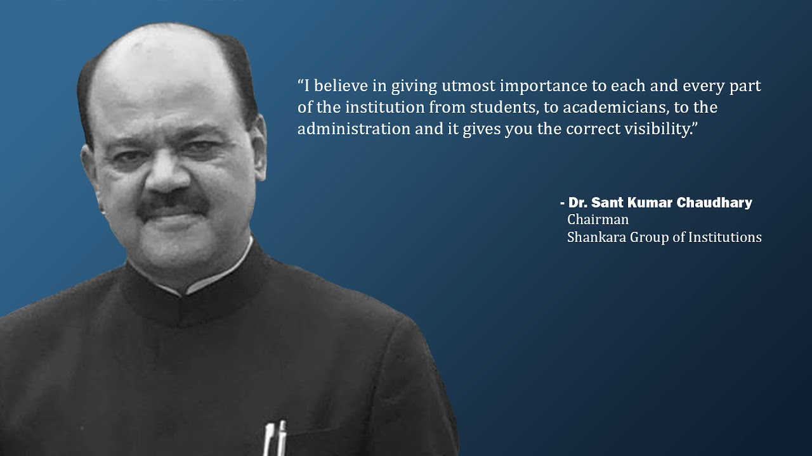

“उन क्षेत्रों तक सहायता का हाथ बढ़ाना जिन्हें इसकी सबसे अधिक आवश्यकता है।”
यही मार्गदर्शक सिद्धांत है जिसने डॉ. संत कुमार चौधरी द्वारा निर्मित प्रत्येक संस्था को आकार दिया है।
उनका शैक्षिक दर्शन
डॉ. संत कुमार चौधरी के लिए शिक्षा कभी भी अपने आप में लक्ष्य नहीं रही। यह वह माध्यम है जिसके द्वारा एक ग्रामीण विद्यार्थी भौतिक, बौद्धिक और नैतिक रूप से इस योग्य बनता है कि अपने आसपास की परिस्थितियों को बदल सके। उनकी अपनी कही दो पंक्तियाँ इस दृष्टिकोण को व्यक्त करती हैं:
“सच्ची शिक्षा हमें यह जानने योग्य बनाये कि ईश्वर ही सत्य है।”
“शिक्षा का प्रथम फल मानवता और आत्मसंयम होना चाहिए।”
उनका चुना हुआ क्षेत्र
डॉ. चौधरी ने सोच-समझकर उन स्थानों पर निर्माण करने का निर्णय लिया जिनसे अन्य शैक्षिक उद्यमी प्रायः बचते हैं — बिहार, राजस्थान, दिल्ली, महाराष्ट्र और तमिलनाडु के ग्रामीण और पिछड़े क्षेत्र। यह चुनाव स्वयं उनके दर्शन का अंग है। महानगर में स्थापित कोई प्रमुख संस्थान सहज सफल होता है; पिछड़े जिले में स्थापित संस्थान अधिक जीवन बदलता है।
उनकी पद्धति
उन्होंने शिक्षा को उन तत्त्वों के साथ जोड़ा है जो शिक्षा को सम्भव बनाते हैं — स्वास्थ्य, जीविका और सम्मान। उनके नेतृत्व में ट्रस्ट विद्यालय एवं महाविद्यालय तो संचालित करता ही है, साथ ही एक नेत्र चिकित्सालय, एक कृषि विज्ञान केंद्र, जलग्रहण-विकास कार्यक्रम, और कृषि, प्रौद्योगिकी, शिक्षा एवं स्वास्थ्य पर पत्रिकाओं का एक छोटा समूह भी प्रकाशित करता है। प्रत्येक आयाम दूसरे को सबल बनाता है।
संस्थान संचालन पर

“मैं संस्थान के प्रत्येक अंग — विद्यार्थी, शिक्षक और प्रशासन — को अत्यधिक महत्त्व देने में विश्वास रखता हूँ, और यही दृष्टिकोण आपको सही दिशा प्रदान करता है।” — डॉ. संत कुमार चौधरी, अध्यक्ष, शंकरा समूह संस्थान
विद्यार्थियों के लिए संदेश
[प्रतीक्षित: अध्यक्ष का विद्यार्थियों के लिए संदेश, उनके अपने शब्दों में।]